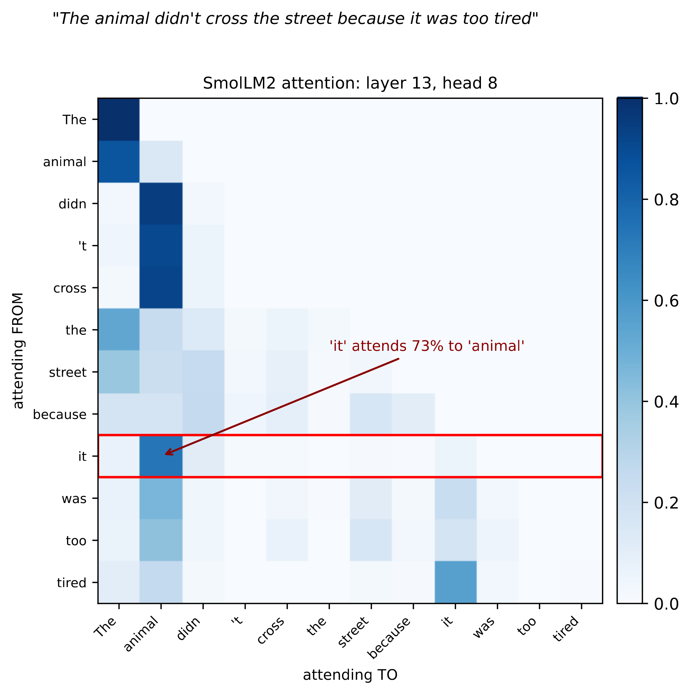
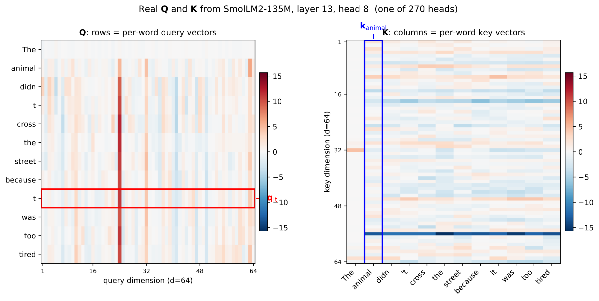
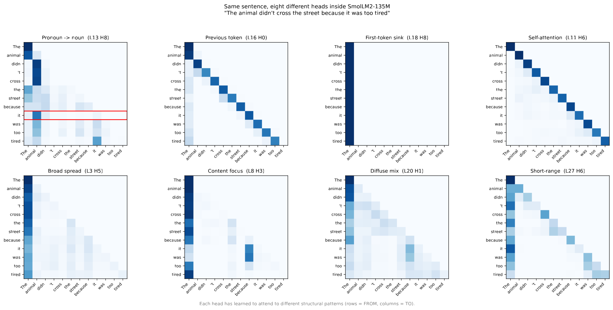

The neural-networks lecture ended on classifiers that are softmax regression on learned features.
A language model predicts the next token $w_t$ from $w_{1:t-1}=(w_1,\dots,w_{t-1})$ the same way, on a feature vector $\bphi(w_{1:t-1})$ (Ch. 6).
What answering it needs:
A language model reads text as tokens, pieces from a fixed vocabulary that byte pair encoding builds by counting.
Merge 1: e + s, 9 times (newest 6, widest 3).
Merge 2: es + t, 9 times.
Merge 3: l + o, 7 times (low 5, lower 2).
Merge 4: lo + w, 7 times.
The tokenizer cuts any new text by applying its merges in the order they were learned.
Take lowest, a word the corpus of slide 5 does not contain. Start from its characters and apply the four merges in order.
It ends as two tokens of the vocabulary, low and est.
newer contains none of the merged pairs, so it stays as five characters.
Real tokenizers learn tens of thousands of merges from a large sample of text, and their pieces decide what a model sees.
Meta's open Llama 3 language models use a vocabulary of 128K tokens; SmolLM2's (right) has 49,152.
Where a word is cut depends on how often its pieces appeared in the tokenizer's training text, not on its parts: strawberry is one token, Strawberry two, and three at the start of a sentence, where no space precedes it; unbelievably is cut into pieces that are not its parts. Digits are single tokens.
The cuts of slide 7 follow the tokenizer's counts, and they change how a model handles numbers and what a text costs in each language.
OpenAI's chat models GPT-3.5 and GPT-4 cut a long number into chunks of three digits from the left (Singh and Strouse 2024): 1234567 as 1234567.
Written with commas, the same number is cut from the right, 1,234,567, and their arithmetic is much better.
Languages pay unequally: the same text can take up to 15 times as many tokens in one language as in another (Petrov et al. 2023).
A model's perplexity per token depends on how its tokenizer cuts the text.
For a text of $n$ tokens and $W$ words with total loss in bits
\[L=\sum_{t=1}^n\log_2\frac{1}{p(w_t\mid w_{1:t-1})},\]the perplexity per token is $2^{L/n}$, and per word $2^{L/W}$.
SmolLM2 and OpenAI's GPT-2 (2019) on the first five paragraphs of The Canterville Ghost, 368 words:
| model | tokens | perplexity per token | per word |
|---|---|---|---|
| SmolLM2-135M-Instruct | 473 | 23 | 57 |
| GPT-2 (124M) | 460 | 29 | 67 |
Each model scores every token after the first: SmolLM2 472 tokens, GPT-2 459, both covering the same 367 words and 2,022 bytes (the text less its first word, When).
The summed loss is 2,145 bits for SmolLM2 and 2,226 for GPT-2. Perplexity per token is 2 to this sum divided by the tokens scored; per word, divided by 367.
Papers that compare tokenizers often divide by bytes instead, which need no rule for where a word ends: bits per byte, the sum divided by 2,022, is 1.061 for SmolLM2 and 1.101 for GPT-2.
The tokenizers have 49,152 (SmolLM2) and 50,257 (GPT-2) tokens. Computed with chat_files/part4-deck-scripts/deckB/bits_per_byte.py.
A token is an index, and the n-gram models of Sec. 1.3 use it as nothing more.
An n-gram model estimates $p(w_t\mid w_{t-2},w_{t-1})$ (here $n=3$) by counting. To it, “cat” and “kitten” are unrelated symbols: counts after “the cat” say nothing about what follows “the kitten”.
With $V$ the vocabulary size, the one-hot vector $\be_w\in\{0,1\}^V$ of word $w$ has a single 1, at $w$'s position. Any two different words are orthogonal and equally far apart.
Vectors in which similar words are close need a notion of when two words are similar, and linguistics supplies one.
The distributional hypothesis: words that occur in similar contexts tend to have similar meanings.
Goal: a vector $\bu_w\in\bbR^D$ for every word $w$, $D$ from 50 to 300, with similar words close together. In real word vectors learned from Wikipedia and news text (right), closeness (cosine similarity, next slide) is graded: from “cat”, dog 0.88, kitten 0.56, car 0.31, truck 0.23.
Two questions: how to measure closeness, and how to learn the vectors from text.
Before learning such vectors, two ways to measure how close two vectors are.
For $\bu,\bv\in\bbR^D$:
\[\langle\bu,\bv\rangle=\sum_{\ell=1}^Du_\ell v_\ell,\qquad\cos(\bu,\bv)=\frac{\langle\bu,\bv\rangle}{\|\bu\|\,\|\bv\|}.\]Read $\bu_1,\dots,\bu_5$ off the figure. For the pairs $(\bu_1,\bu_2)$, $(\bu_3,\bu_4)$, $(\bu_1,\bu_3)$ and $(\bu_1,\bu_5)$, find
Each pair needs its inner product for (a), and that and its two lengths for (b), from $\bu_1=(3,1)$, $\bu_2=(4,3)$, $\bu_3=(0.5,-1.5)$, $\bu_4=(1.5,-2)$, $\bu_5=(-3,-1)$.
| pair | (a) inner product | (b) cosine |
|---|---|---|
| $(\bu_1,\bu_2)$ | $12+3=15$ | $15/(\sqrt{10}\cdot5)\approx0.95$ |
| $(\bu_3,\bu_4)$ | $0.75+3=3.75$ | $3.75/(\sqrt{2.5}\cdot2.5)\approx0.95$ |
| $(\bu_1,\bu_3)$ | $1.5-1.5=0$ | $0$ |
| $(\bu_1,\bu_5)$ | $-9-1=-10$ | $-10/(\sqrt{10}\cdot\sqrt{10})=-1$ |
(c) The first two pairs share a cosine but not an inner product; $(\bu_1,\bu_3)$ is perpendicular, $(\bu_1,\bu_5)$ opposite.
Word2vec turns the distributional hypothesis into a task: predict a hidden word (right) from its context.
Each word $w$ of the vocabulary $\cV$ has a context vector $\bc_w$ and an output vector $\bu_w$.
CBOW (continuous bag of words), with context the $m/2$ words on each side of the blank in its sentence (here $m=4$):
Here is that computation for “The store bought ___ from grocery wholesalers”, with made-up three-dimensional vectors.
Context vectors (right): store $(0.4,0.5,0.3)$, bought $(0.2,0.1,0.3)$, from $(0.1,0.1,0.1)$, grocery $(0.8,0.6,0.2)$.
Their average, the star: $\bh=(0.375,\,0.325,\,0.225)$.
Output vectors $\bu_{\text{oranges}}=(0.7,0.5,0.2)$ and $\bu_{\text{laptops}}=(0.1,0.2,0.9)$: a candidate's score is its inner product with $\bh$.
Each candidate's score is the inner product of its output vector with $\bh$, and the softmax turns the scores into probabilities.
From slide 16: $\bh=(0.375,\,0.325,\,0.225)$, $\bu_{\text{oranges}}=(0.7,0.5,0.2)$, $\bu_{\text{laptops}}=(0.1,0.2,0.9)$.
Scores: $\langle\bu_{\text{oranges}},\bh\rangle=0.470$ and $\langle\bu_{\text{laptops}},\bh\rangle=0.305$.
Softmax over the two: $p(\text{oranges}\mid\text{context})=0.541$, and $0.459$ for laptops.
Training fits every vector by maximum likelihood, one blank at a time, with gradients from the chain rule.
For a blank with hidden word $w^*$, scores $z_w=\langle\bu_w,\bh\rangle$ and their softmax $p(w\mid\text{context})$ over $\cV$:
\[\cL=-\ln p(w^*\mid\text{context})=-z_{w^*}+\ln\sum_{w'\in\cV}e^{z_{w'}}.\]Its derivative with respect to a score is the error (Ch. 6), with $I(w=w^*)=1$ only for the hidden word:
\[\begin{aligned}\frac{\partial\cL}{\partial z_w}&=-I(w=w^*)+\frac{e^{z_w}}{\sum_{w'}e^{z_{w'}}}\\&=\htmlClass{hl-err}{p(w\mid\text{context})-I(w=w^*)}.\end{aligned}\]Since $\partial z_w/\partial\bu_w=\bh$, the gradient is error times input:
\[\nabla_{\bu_w}\cL=\big(p(w\mid\text{context})-I(w=w^*)\big)\,\bh.\]$\bh=(0.375,\,0.325,\,0.225)$; $p=0.541$ for oranges, $0.459$ for laptops; $\cL=-\ln0.541=0.614$.
Errors: $0.541-1=-0.459$ for oranges, $0.459$ for laptops.
Output-vector gradients:
\[\begin{aligned}\nabla_{\bu_{\text{oranges}}}\cL&=-0.459\,\bh\\&=(-0.172,\,-0.149,\,-0.103),\\\nabla_{\bu_{\text{laptops}}}\cL&=0.459\,\bh\\&=(0.172,\,0.149,\,0.103).\end{aligned}\]The context vectors are learned by the same gradient descent, through their average $\bh=\frac1m\sum_{j=1}^m\bc_{w_j}$.
$\bh$ enters every score $z_w=\langle\bu_w,\bh\rangle$:
\[\begin{aligned}\nabla_{\bh}\cL&=\sum_{w\in\cV}\big(p(w\mid\text{context})-I(w=w^*)\big)\,\bu_w\\&=\sum_{w\in\cV}p(w\mid\text{context})\,\bu_w-\bu_{w^*}.\end{aligned}\]Each context word's vector gets $1/m$ of it:
\[\nabla_{\bc_{w_j}}\cL=\tfrac1m\nabla_{\bh}\cL=\tfrac1m\big(\textstyle\sum_wp(w\mid\text{context})\,\bu_w-\bu_{w^*}\big).\]A step moves each $\bc_{w_j}$ toward $\bu_{w^*}$ and away from the probability-weighted average of the output vectors.
A word's $\bc_w$ is updated in every blank where the word is in the context, so over the corpus it moves toward the output vectors of the words it tends to surround.
Errors $-0.459$ (oranges) and $0.459$ (laptops); $m=4$.
Each of the four context vectors (store, bought, from, grocery):
\[\begin{aligned}\nabla_{\bc_{w_j}}\cL&=\tfrac14\nabla_{\bh}\cL\\&=(-0.069,\,-0.034,\,0.080).\end{aligned}\]Training starts from random context vectors (in gensim, a widely used open-source word2vec library, output vectors at zero) and takes one step of size $\eta$ per blank:
\[\bu_w\leftarrow\bu_w-\eta\,\nabla_{\bu_w}\cL,\qquad\bc_{w_j}\leftarrow\bc_{w_j}-\tfrac{\eta}{m}\,\nabla_{\bh}\cL,\]the same step for every context word $j=1,\dots,m$ of the blank.
One step on slide 16's blank, $\eta=0.5$: $\bu_{\text{oranges}}$ becomes $(0.786,0.575,0.252)$ and $\bu_{\text{laptops}}$ $(0.014,0.125,0.848)$, every context vector moves by the same $(0.034,0.017,-0.040)$, and $p(\text{oranges}\mid\text{context})$ rises from 0.541 to 0.589.
The run uses the softmax over the two words of slide 16 and updates the four context vectors and the two output vectors together at every step, $\eta=0.5$; its first step is the one on the slide; CBOW_RUN in figs.js keeps every vector at every step for the figure. deckB_numbers.py repeats it.
gensim's source (word2vec_inner.pyx, its CBOW routine) sums the rows of syn0, documented as “Embeddings for the words in the vocabulary (`model.wv.vectors`)”, for the context words, and keeps the output vectors in syn1neg, “Weights of the hidden layer in the model's trainable neural network.” Its init_weights fills syn1neg with zeros.
The same training, started from random vectors on a toy corpus, groups words that keep the same company.
The corpus: 12 sentences such as “she ate ripe apples” and “he bought new tablets at the electronics store” (all in the drawer).
Start: random context vectors (right, each drawn at length 1), output vectors at zero; 60 epochs of slide 20's update, $\eta=0.2$.
By epoch 60 the fruits point one way and the devices another: mean cosine 0.999 within a group, $-0.47$ across (0.19 and 0.19 at the start).
The corpus: “we ate fresh oranges”, “she ate ripe apples”, “he ate fresh bananas”, “we bought ripe oranges at the grocery”, “she bought fresh apples at the grocery”, “he bought ripe bananas at the grocery”, “we charged new laptops”, “she charged old phones”, “he charged new tablets”, “we bought old laptops at the electronics store”, “she bought new phones at the electronics store”, “he bought old tablets at the electronics store”: 69 words, 21 distinct.
Every word is a blank once per epoch, 69 blanks, in a fresh random order each epoch. Its context is the words within 2 positions in its sentence, so $m$ runs from 1 to 4, fewer near a sentence's ends, and $\bh$ averages the $m$ present, as gensim's CBOW does. Full softmax over the 21 words, $D=3$, $\eta=0.2$. As in gensim, the context vectors start uniform in $[-1/3,1/3)$ and the output vectors at zero, so the first loss is $\ln21=3.04$.
Seed 29 is a start without grouping: within- and across-group cosines both 0.19. From 40 other starts the within-group cosine ends between 0.956 and 1 (median 0.995), the across-group cosine at a median of $-0.20$ (largest 0.50). Computed with chat_files/part4-deck-scripts/deckB/cbow_toy.py.
The run of slide 21 can be followed through the average loss and the cosines between the context vectors.
Right: the loss per blank falls from $\ln21=3.04$ to 0.88. The mean cosine within a group rises from 0.19 to 0.999; across groups it first rises to 0.64 at epoch 13, then falls below 0 by epoch 25 and to $-0.47$.
model.wv).Negative sampling replaces CBOW's sum over the whole vocabulary by a few random words.
Skip-gram predicts each context word $c$ of a word $w$ (a word within the window around $w$ in its sentence) from $w$. With negative sampling (SGNS), this is logistic regression on (word, context) pairs: label 1 for a pair from the text, 0 for each of $k$ pairs with a random context:
\[p(\text{label}=1\mid w,c)=\sigma(\langle\bu_w,\bc_c\rangle),\]with $\sigma$ the sigmoid (Ch. 6) and $\bc_c$ the context vector of $c$.
The loss of a real pair with random contexts $c_1,\dots,c_k$:
\[-\ln\sigma(\langle\bu_w,\bc_c\rangle)-\sum_{i=1}^k\ln\sigma(-\langle\bu_w,\bc_{c_i}\rangle).\]Levy and Goldberg (NIPS 2014) worked out what the fitted SGNS vectors converge to.
With enough coordinates to fit every pair, the SGNS loss is minimized by setting $\langle\bu_w,\bc_c\rangle=\PMI(w,c)-\ln k$ for every pair $(w,c)$, where
\[\htmlClass{hl-pmi}{\PMI(w,c)=\ln\frac{p(w,c)}{p(w)\,p(c)}},\]$p(w,c)$ is the fraction of all (word, context) pairs, counted within the window over the whole corpus, that are $(w,c)$, and $p(w)$, $p(c)$ are its marginals.
Example: $p(w,c)=0.02$, $p(w)=0.1$, $p(c)=0.05$ give $\PMI(w,c)=\ln4$.
A word $w$ occurs with context $c$ with probability $p(w,c)$, and each occurrence of $w$ draws $k$ random contexts from $p(c)$. Per pair of the text, the expected objective for $(w,c)$, with $x=\langle\bu_w,\bc_c\rangle$, is
\[\ell(x)=p(w,c)\ln\sigma(x)+k\,p(w)\,p(c)\ln\sigma(-x).\]With $\frac{d}{dx}\ln\sigma(x)=\sigma(-x)$, setting $\ell'(x)=0$ gives
\[\htmlClass{dk1}{p(w,c)\,\sigma(-x)=k\,p(w)\,p(c)\,\sigma(x).}\]Since $\sigma(x)/\sigma(-x)=e^x$,
\[\htmlClass{dk2}{x=\ln\frac{p(w,c)}{k\,p(w)\,p(c)}=\PMI(w,c)-\ln k.}\]This needs each inner product to be free to take its own value, which holds when the vectors have enough coordinates (Levy and Goldberg, Sec. 3.1). With fewer, the fit is a weighted low-rank approximation of this matrix.
The theorem assumes a perfect fit; trained on a real text, SGNS comes close to it.
Jane Austen's Emma (161,686 words, 2,328 distinct words seen at least 5 times). SGNS with $k=5$ random contexts, a fixed window of 2 words on each side within each sentence, 100 coordinates.
For the 3,584 (word, context) pairs seen at least 20 times, the inner product after training against $\PMI(w,c)-\ln k$ from the same counts: correlation 0.990 (600 pairs drawn on the right).
(mr, knightley): seen 331 times, $\PMI-\ln k=1.96$, inner product 2.16. The other two marked pairs, (frank, churchill) and (of, the), also lie near the dashed line.
gensim's word2vec with the settings of Levy and Goldberg's analysis: skip-gram, $k=5$, a fixed window of 2 (shrink_windows=False; by default gensim draws a smaller window at each position), no subsampling of frequent words, random contexts drawn from the word frequencies, 30 passes, one seed.
$\PMI$ is computed from the same window counts: $\ln\big(\#(w,c)\,|D|/(\#(w)\,\#(c))\big)$, with $|D|$ the number of pairs. The text is cut into sentences at . ! ? and ;, and neither gensim nor the counts let a window cross a sentence; words seen fewer than 5 times are dropped before the windows are taken, as gensim does.
A least-squares line gives inner product $=1.02\,(\PMI-\ln k)+0.08$; the mean absolute gap is 0.12. Computed with chat_files/part4-deck-scripts/deckB/sgns_pmi.py.
Trained on a large corpus, such vectors group words by topic and arrange them along shared directions.
The vectors of slide 12 come from GloVe (Pennington, Socher and Manning 2014), a related model fit to word co-occurrence counts: 100 coordinates for each of 400,000 words, trained on Wikipedia 2014 and the Gigaword 5 news corpus. Nearest words to “soccer” by cosine: football 0.87, basketball 0.80, volleyball 0.77, hockey 0.74, league 0.74.
Right, 32 words of four groups: each is closer to its own group's average vector than to any other group's, in all 100 coordinates.
Right, 34 capitals and their countries: the first direction separates Europe from Asia for 67 of the 68 words, the second cities from countries for 67 of 68.
Differences between vectors carry meaning too: the same offset recurs across many pairs of words.
To answer “$a$ is to $b$ as $c$ is to ?”, take the word nearest by cosine to $\bu_b-\bu_a+\bu_c$ (unit vectors), leaving out $a$, $b$ and $c$. Right: king − man + woman.
No analogy appears in the training objective. It follows from the counts (Allen and Hospedales 2019): if, across context words $c$,
\[\frac{p(c\mid\text{king})}{p(c\mid\text{man})}\approx\frac{p(c\mid\text{queen})}{p(c\mid\text{woman})},\]vectors whose inner products fit $\PMI-\ln k$ (slide 24) have $\bu_{\text{king}}-\bu_{\text{man}}\approx\bu_{\text{queen}}-\bu_{\text{woman}}$.
For $c=$ young, counted five words either side in 17 million words of Wikipedia (text8), the two ratios are 0.15 and 0.11.
| vector arithmetic | nearest word |
|---|---|
| Tokyo − Japan + France | Paris |
| man − king + queen | woman |
| slow − big + bigger | slower |
| Einstein − scientist + painter | Picasso |
These vectors learn whatever associations their training text contains, and a static embedding gives each word exactly one vector.
GloVe: doctor − man + woman ≈ nurse.
Bolukbasi et al. (2016): word2vec trained on Google News articles answers “man is to computer programmer as woman is to x” with x = homemaker.
“The ticket cost a pound.” “The bag weighs a pound.” “Waves pound the shore.”
The nearest words to “pound” in GloVe mix money and weight: pounds, dollar, kilogram, cent, ounce.
Attention answers that question; first, here is how a reader handles a word with several senses.
A reader decides by looking at a few informative words, couch, season, hiking, and ignores the rest.
Attention gives each word a new vector, a weighted average of the vectors of all the words in its sentence.
Here $\cat{\balpha_i}=(\cat{\alpha_{i1}},\dots,\cat{\alpha_{in}})$ is a distribution over the $n$ positions, and $\bv_i^{\text{new}}$ is the mean of $\bv_J$ for $J\sim\cat{\balpha_i}$.
Example: “old spring couch soft” (right), with given weights.
Spring's own vector is not lost to its small weight: a transformer block adds this output to it, $\bx+f(\bx)$ (slide 43). How much a token attends to itself varies by head.
The same given weights, now in a sentence where spring is a season.
Vectors: The (1,0), spring (2,1), season (2,3), blooms (0,2).
Weights from “spring”, as on slide 31: 0.10, 0.10, 0.50, 0.30.
Each weight multiplies its word's vector, and the four products add.
Vectors The (1,0), spring (2,1), season (2,3), blooms (0,2); weights 0.10, 0.10, 0.50, 0.30.
(a) \[\begin{aligned}\bv^{\text{new}}_{\text{spring}}&=0.1(1,0)+0.1(2,1)+0.5(2,3)+0.3(0,2)\\&=(1.30,\,2.20).\end{aligned}\]
(b) Toward “season”, the time of year. On slide 31 the same weights pulled “spring” toward “couch”.
So far the weights were given; a transformer computes them from the vectors themselves.
Learned $\mW_Q,\mW_K\in\bbR^{d\times D}$ and $\mW_V\in\bbR^{d_v\times D}$ turn each input $\bx_j\in\bbR^D$ into a query, a key and a value:
\[\underset{\textsf{what $i$ looks for}}{\cq{\bq_i}=\mW_Q\bx_i}\qquad\underset{\textsf{what $j$ is matched on}}{\ck{\bk_j}=\mW_K\bx_j}\qquad\underset{\textsf{what $j$ contributes}}{\cv{\bv_j}=\mW_V\bx_j}\] \[\htmlClass{hl-s}{s_{ij}=\frac{\langle\cq{\bq_i},\ck{\bk_j}\rangle}{\sqrt d}},\qquad\cat{\balpha_i}=\softmax_{j=1,\dots,n}(s_{ij}).\]Example: slide 32's vectors, $\mW_Q=\mW_K=\mW_V=\mI$, $D=d=2$. For “spring”, $\langle\cq{\bq_{\text{spring}}},\ck{\bk_j}\rangle=(2,5,7,2)$ for $j=1,\dots,4$, and $\cat{\balpha_{\text{spring}}}=(0.022,0.187,0.768,0.022)$ (top right),
so $\bv^{\text{new}}_{\text{spring}}=(1.93,\,2.54)$, against slide 33's $(1.30,2.20)$ (bottom right).
Slide 34 divides each score by $\sqrt d$; the reason is the size of an inner product of long vectors.
Suppose the $d$ components of a query $\cq{\bq_i}$ and a key $\ck{\bk_j}$ are independent, with mean 0 and variance 1 (Vaswani et al. 2017).
Each product $q_{i\ell}k_{j\ell}$ then has mean 0 and variance $\E[q_{i\ell}^2k_{j\ell}^2]=\E[q_{i\ell}^2]\,\E[k_{j\ell}^2]=1$, and the variances of independent terms add (Ch. 0):
\[\Var(\langle\cq{\bq_i},\ck{\bk_j}\rangle)=\sum_{\ell=1}^d\Var(q_{i\ell}k_{j\ell})=d.\]So the scores spread like $\sqrt d$: a standard deviation of 8 at $d=64$ (right, one random draw).
Scores this far apart saturate the softmax, and a saturated softmax passes back almost no gradient.
The softmax grows exponentially in its scores, so one weight comes near 1 and the rest near 0 (right: slide 35's draw, unscaled; over 2,000 draws the largest weight averages 0.84).
From $\cat{\alpha_{ij}}=e^{s_{ij}}/\sum_\ell e^{s_{i\ell}}$, by the quotient rule,
\[\frac{\partial\cat{\alpha_{ij}}}{\partial s_{ij}}=\cat{\alpha_{ij}}-\cat{\alpha_{ij}}^2=\cat{\alpha_{ij}}(1-\cat{\alpha_{ij}}),\]near 0 when $\cat{\alpha_{ij}}$ is near 0 or 1: little gradient reaches the scores, or through them $\mW_Q$ and $\mW_K$.
Dividing by $\sqrt d$ gives the scores variance 1: the largest weight averages 0.25, the weights stay spread, and the gradients stay useful.


Queries (rows, left) and keys (columns, right) of the same head, 64 numbers each.
A trained model computes these weights with learned matrices, and they can be read off for a real sentence.
SmolLM2-135M-Instruct on “The animal didn't cross the street because it was too tired”, layer 13, head 8.
First figure: row $i$ holds the weights $\cat{\balpha_i}$ of token $i$; the row of “it” puts 73% of its weight on “animal”.
The second figure, which replaces it, shows the queries and keys behind those weights. The score $\langle\cq{\bq}_{\text{it}},\ck{\bk}_{\text{animal}}\rangle/\sqrt{64}$ is computed from the two outlined vectors after the rotation that encodes position (slide 40).

A layer runs several attention computations side by side; each is called a head.
Head $h$ has its own $\mW_Q^{(h)},\mW_K^{(h)},\mW_V^{(h)}$ (SmolLM2 shares 3 key and value heads among its 9 query heads); the heads' outputs are stacked into one vector and multiplied by an output matrix $\mW_O$.
SmolLM2 has 30 layers of 9 heads, 270 in all; left, eight on one sentence, chosen for their distinct patterns.
A language model predicts each token from the ones before it, so attention must not look ahead.
With the scores $s_{ij}=\langle\cq{\bq_i},\ck{\bk_j}\rangle/\sqrt d$ of slide 34, set
\[\begin{aligned}&s_{ij}=-\infty\ \text{for}\ j>i\ \text{(before the softmax)},\\&\text{so}\ e^{s_{ij}}=0\ \text{and}\ \cat{\alpha_{ij}}=0.\end{aligned}\]Right: slide 34's weights, without the mask.
With the mask, they become lower triangular.
One pass over a text gives every $p(w_t\mid w_{1:t-1})$, so the loss $\cL=-\sum_t\ln p(w_t\mid w_{1:t-1})$ comes from all positions at once.
Attention so far ignores where each word sits, so word order must be supplied separately.
Without the mask, attention treats its inputs as a set: permuting the inputs permutes the outputs and changes nothing else. Right: slide 34's weights from “spring” and its new vector.
Reversed, “blooms season spring The”: “spring” puts the same weights on the same words and gets the same new vector.
So position $t$ is encoded, by
Stacked attention layers give each token a vector that depends on its context.
| C1 | The old couch had a broken spring |
| C2 | The mattress squeaks because of a loose spring |
| S1 | The flowers bloom every year in spring |
| S2 | Birds return to the north every spring |
| W1 | We drank cold water from a mountain spring |
| W2 | The village gets its water from a natural spring |
SmolLM2's vectors at the final “spring”: as token embeddings, identical (left).
After 12 of its 30 layers, cosines of 0.92 to 0.97 within a sense and 0.74 to 0.82 across senses (right).
A transformer stacks $L$ blocks of the same form, one per layer, and every block contains masked multi-head attention.
A block has two parts:
each with a residual connection, $\bx+f(\bx)$ for the part $f$, and layer normalization (each vector rescaled to mean 0 and variance 1 across its coordinates). The last layer is softmax regression over the vocabulary.
Parameters per block, of width $d$: attention $4d^2$, MLP $8d^2$, so about $12d^2$.
With $d=4096$ and $L=32$, $32\times12d^2\approx6.4$B; with the embeddings, about $6.7$B: the shape of Llama 2 7B.
Attention: $\mW_Q,\mW_K,\mW_V$ (all heads together) and the output matrix $\mW_O$ are $d\times d$ each: $4d^2$.
MLP: $d\to4d\to d$, two matrices of $4d^2$ each: $8d^2$. Biases and normalization add only multiples of $d$.
At $d=4096$: $12d^2=201{,}326{,}592$ per block, $6{,}442{,}450{,}944$ for 32 blocks.
Llama 2 7B's configuration (hidden size 4,096; 32 layers; MLP width 11,008 with three matrices; vocabulary 32,000): attention $4d^2=67.1$M and MLP $3\times4096\times11{,}008=135.3$M per block, $202.4$M in all; $6.48$B for 32 blocks; input and output embeddings $2\times32{,}000\times4{,}096=0.26$B; total $6.74$B.
Llama 2's paper: “apply pre-normalization using RMSNorm (Zhang and Sennrich, 2019), use the SwiGLU activation function (Shazeer, 2020)”. RMSNorm rescales each vector without subtracting its mean; SwiGLU is why its MLP has three matrices.
Generating text runs the transformer once per new token, and the causal mask lets most of that work be reused.
With the mask, earlier positions never see later ones, so their keys and values never change.
They are stored, in the KV cache: each new token computes its own query, key and value, attends to the cache, and joins it.
Memory per token: $2\times\text{layers}\times\text{width}$ numbers. In 16-bit numbers, with 32 layers of width 4,096: 0.5 MB per token, and 2 GB for a context of 4,096 tokens.
Each new token attends to the whole context, so a relevant token competes with every other one.
Toy scores, in a context of $n$ tokens: one relevant key at 3, the other $n-1$ at $-2$. Its weight:
\[\cat{\alpha}=\frac{e^3}{e^3+(n-1)e^{-2}}=\frac{1}{1+(n-1)e^{-5}}.\]| $n$ | 10 | 100 | 1,000 | 10,000 |
|---|---|---|---|---|
| $\cat{\alpha}$ | 0.94 | 0.60 | 0.13 | 0.015 |
Keeping $\cat{\alpha}=\frac12$ needs a score gap of $\ln(n-1)$, growing with the context.
Measured: on NoLiMa (2025), a benchmark of finding a fact in a long text where the fact and the question share few words, the accuracy of OpenAI's GPT-4o falls from an almost perfect 99.3% to 69.7% at 32K tokens.
Generation runs the chain rule of Sec. 1.3 forward, one sampled token at a time.
\[p(w_{1:n})=\prod_{t=1}^np(w_t\mid w_{1:t-1})\]Generate: sample $w_t$ from $p(\cdot\mid w_{1:t-1})$, append it, repeat.
Temperature $T>0$ divides the logits $z_k$ (Ch. 6): $\;\cpd{p_T(k)}=\dfrac{e^{z_k/T}}{\sum_je^{z_j/T}}$.
| $T$ | rain | snow | clear |
|---|---|---|---|
| 1 | 0.5 | 0.25 | 0.25 |
| $T$ | rain | snow | clear |
|---|---|---|---|
| 1/2 | 0.667 | 0.167 | 0.167 |
| 1 | 0.5 | 0.25 | 0.25 |
| $T$ | rain | snow | clear |
|---|---|---|---|
| 1/2 | 0.667 | 0.167 | 0.167 |
| 1 | 0.5 | 0.25 | 0.25 |
| 2 | 0.414 | 0.293 | 0.293 |
On a real model, temperature trades predictable text for varied text.
SmolLM2-135M-Instruct continues “Tomorrow it will” for 20 tokens, sampling from its full next-token distribution, with the same random seed each time; ↵ is a line break.
Tokens come from counting, embeddings from PMI, attention from a softmax, and generation from the chain rule.